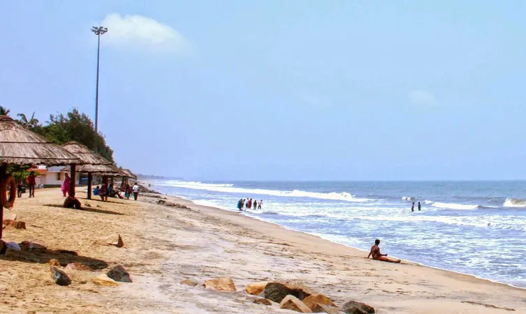
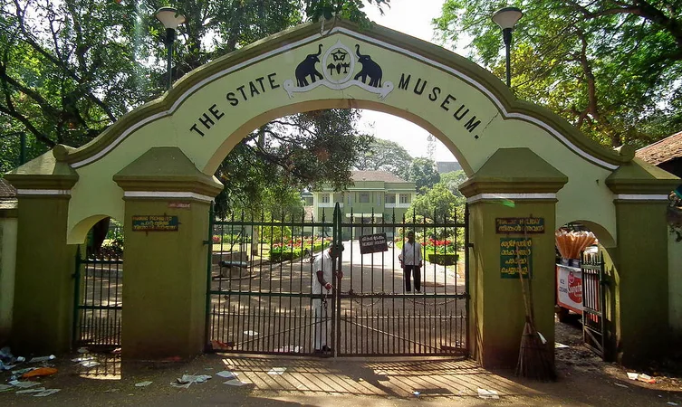

01.Athirapally Waterfalls

On the outskirts of the city at a distance of some 60 km, the Athirappilly waterfalls mark one of the best places to visit in Thrissur. Standing 80 ft tall and about 330 ft wide, these falls are the largest in the state of Kerala.
The majesty of this place can be understood by the fact that the falls are located on the Chalakudy River, that originates from the highest mountain in India outside of the Himalayas. A perfect place for a group outing, these falls are sometimes called the Niagra of India.
Location: 57.8 km from Thrissur bus stand.
Timings: Everyday, 8 AM to 6 PM.
Entry Fees: INR 15 per person.
02.Chavakkad Beach

One of the most fascinating and unexplored beaches of the state of Kerala, the Chavakkad Beach is popularly one amongst the most famous Thrissur Tourist places. Perfect for picnickers, honeymooners, and tourists of all sorts, the golden sand of the beach is what at the tracts people from all corners of the country.
The place where the beach is, there is a river that meets the sea, making an estuary. One of the best reasons for people to flock here is the colour of the waters, and the sight of fishermen going about their daily life. One can do a lot here, one of which is witnessing the amazing cleanliness of the area.
Location: 28.3 km from Thrissur bus stand.
Timings:Everyday, 6 AM to 6:30 PM.
Entry Fees: No entry fee.
03.Thrissur Zoo and State Museum

Smack in the middle of the city is one of the most alive and beautiful of all Thrissur Tourist Places. Also known as the State Museum & Zoo, the Thrissur Zoo is located at about 2 km from the city centre, the zoo is more than just a place for showcasing the beautiful flora and fauna of the region.
There is also a natural history museum and an art museum that have exhibits capturing the social and cultural heritage of Thrissur. With it being one of the two Zoological Parks in Kerala, the zoo experiences a good number of visitors every year.
Location: 2.7 km from Thrissur bus stand.
Entry Fees: INR 5 for adults, INR 3 for children, INR 5 for a camera, and INR 500 for the video camera.
Timings:Tuesday to Sunday, from 9 AM to 5 PM.